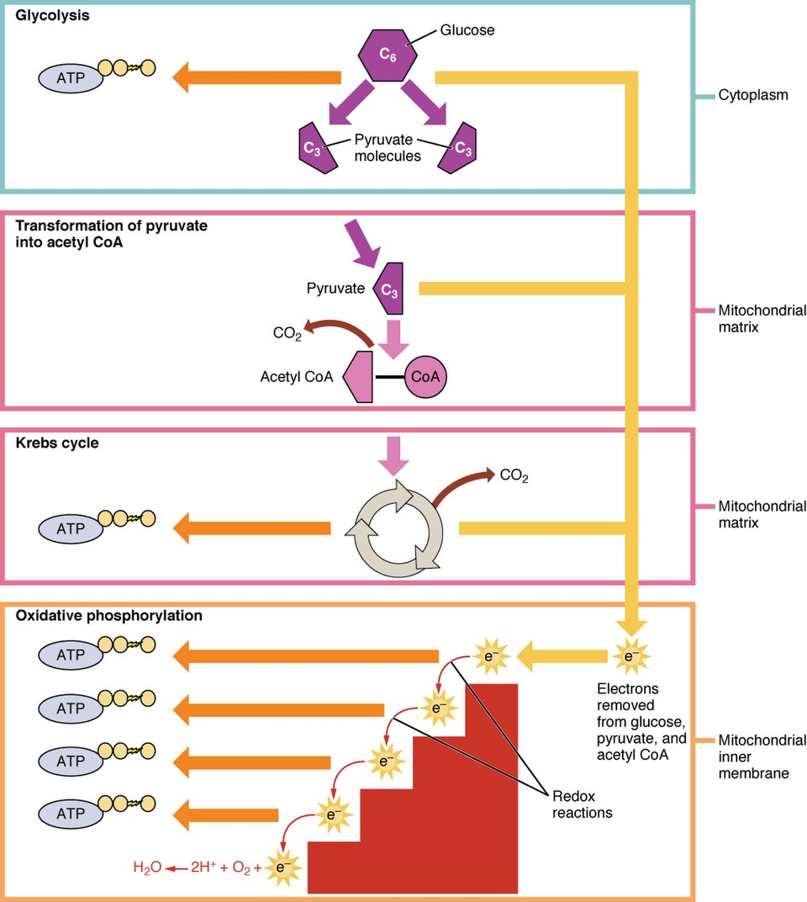

← Chapter 24
Anatomy & Physiology · Chapter 24
Cellular Respiration
How one glucose becomes up to
~32 ATP
. It happens in three stages, in two locations. Step through and watch the ATP add up.
Glucose
ATP: 0
Cellular respiration
glucose → ATP
The stages
‹ Prev
▶ Play
Next ›
📷 Reference image
A real labeled figure to compare with the interactive above.

Cellular Respiration — OpenStax, CC BY 3.0 (via Wikimedia Commons)